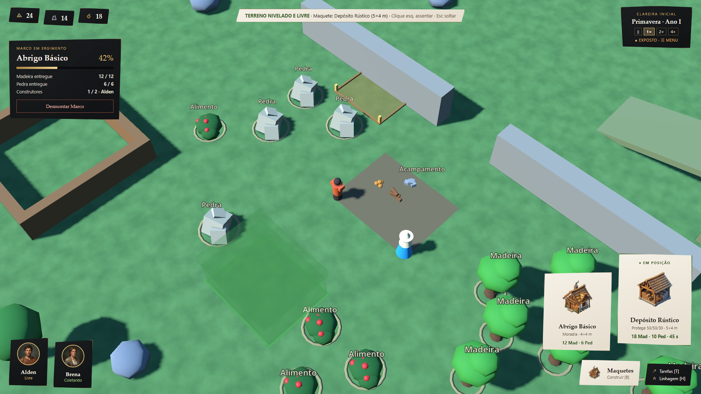
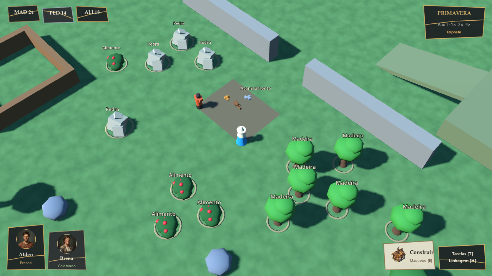
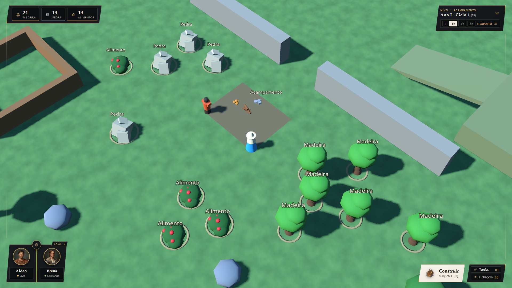
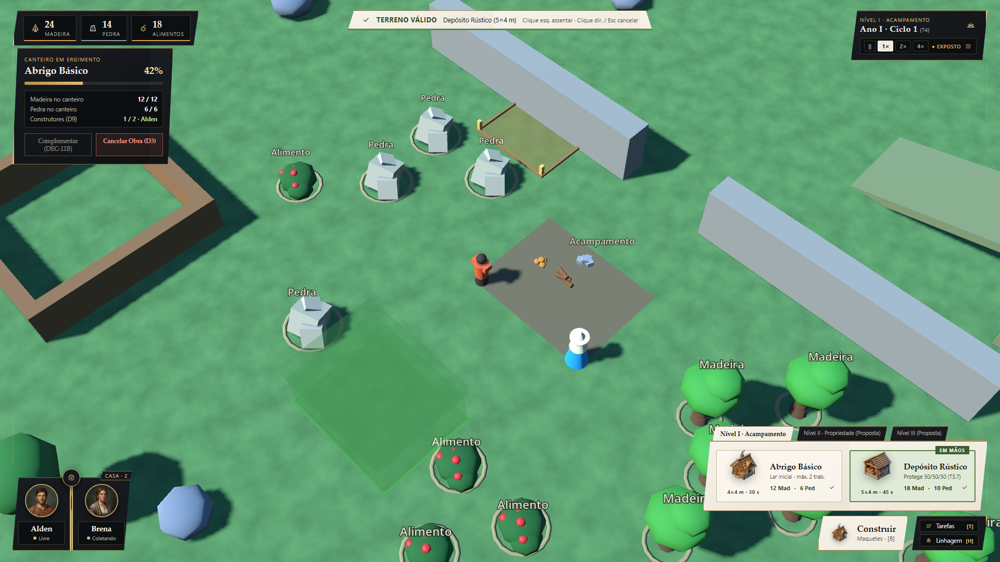
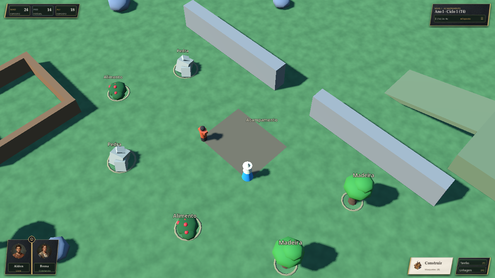

ANTES — D2 Original (UI-0 R2)
Problemas auditados na R2 HUD R2: 4 grupos soltos com ângulos variados e placa ema fora do GDD.
HUD R2: 4 grupos soltos com ângulos variados e placa ema fora do GDD.
Construção R2: dois cartões verticais altos em alabastro (ainda convencional). Menu R2: lista vertical convencional de faixas sobre fundo escuro.
Menu R2: lista vertical convencional de faixas sobre fundo escuro.
Godot R2 (720p): veios dourados cruzavam texto (MAD/PED/ALI, Ano I, Brena) e Construir rente à borda.
Principais limitações da D2 original: (1) quatro blocos independentes nos cantos; (2) referências culturais japonesas (ema/kintsugi) sem lastro no GDD; (3) estelas como cartões separados; (4) showcase Godot estático com linhas diagonais atravessando rótulos.
DEPOIS — D2 Refinada (UI-0 R2.1)
Sistema Unificado · Validado na Godot 4.7.2
HUD R2.1: bisel único de 8°, bloco de estoques com bandejas, Marco de Ciclo e Díptico unido.
Construção R2.1: Mesa de Maquetes horizontal em alabastro + abas de Nível + prévia válida/inválida. Menu R2.1: chave de alabastro atravessando a Fenda de Aurora + cunhas escalonadas na diagonal.
Menu R2.1: chave de alabastro atravessando a Fenda de Aurora + cunhas escalonadas na diagonal.
Godot R2.1 (720p): Atlas 2D real texturizado, zero sobreposição em qualquer rótulo e estados interativos reais.
Ganhos comprovados na D2.1: (1) gramática arquitetural única (chanfro 8° + Fenda de Aurora estritamente na aresta de encaixe); (2) 100% alinhado ao GDD v1.2; (3) Díptico de Fundadores + Laje deslizante + Pilar de Linhagem; (4) showcase Godot interativo com medição empírica Procedural × Atlas.